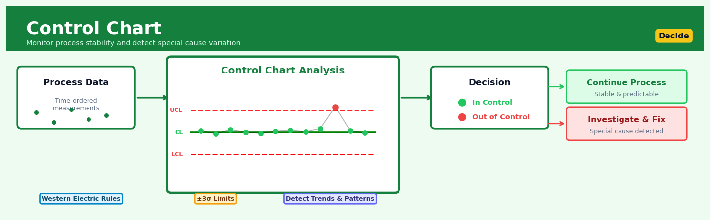

Control Chart#


Control Chart is a core transformation in the Decide workflow.
The 60-Second Version#
What it does: A control chart tells you whether changes in your process are normal fluctuations or genuine problems requiring action.
When to use it: Use it when you need to monitor any repeating process—production output, call center response times, daily sales, error rates—to catch issues early without overreacting to routine ups and downs.
What you get back: A visual chart showing whether your latest measurements fall within expected boundaries, signaling either “keep watching” or “investigate now.”
At a Glance#
Difficulty |
Easy |
Typical runtime |
Seconds on 100K rows |
What you bring |
Sequential measurements from a repeating process (timestamps and values) |
What you get |
A time-series plot with statistically derived control limits flagging out-of-control points |
Heuristix bucket |
Decide — Decision Intelligence |
The control chart’s greatest value is telling you when not to intervene—preventing costly overreactions to noise that wastes resources and destabilizes otherwise healthy processes.
Learning Objectives#
After reading this chapter, a business user will be able to:
Identify processes in your organization where control charts add value—distinguishing monitoring scenarios (production lines, service times, defect rates) from contexts where other methods fit better.
Read a control chart to distinguish normal process variation from genuine signals of trouble, and explain to stakeholders whether an observed spike requires action or represents expected randomness.
Decide confidently when to intervene in a process and when to leave it alone, using control limit violations and run rules to trigger investigations, process adjustments, or operational alerts.
After reading this chapter, a data scientist will be able to:
Implement the correct control chart type (X-bar, I-MR, p-chart, c-chart) for your data structure, handling subgrouping decisions, sample size variations, and the transition from Phase I (establishing control) to Phase II (monitoring).
Set control limits by choosing appropriate multipliers (typically 3-sigma) and adjust sensitivity by modifying limits or applying Western Electric rules, balancing false alarm rates against the speed of detecting true process shifts.
Validate that your process data meets control chart assumptions (independence, stability, distributional requirements), diagnose patterns that invalidate results (autocorrelation, non-random trends), and recognize when transformations or alternative methods are needed.
Overview#
A control chart is a statistical process monitoring tool that distinguishes between common-cause variation (inherent random fluctuation in a stable process) and special-cause variation (signals indicating that a process has shifted or become unstable). The technique belongs to the family of Statistical Process Control (SPC) methods and serves as the foundation for continuous quality improvement in manufacturing, operations, and increasingly, in data-driven business processes. By plotting sequential observations against statistically derived control limits, control charts enable practitioners to make timely, evidence-based decisions about when to intervene in a process and when to leave it alone.
When to Use This#
Use this when you need to monitor a business metric over time and distinguish meaningful shifts from normal random variation — for example, tracking daily call centre wait times to detect service degradation before customers complain.
Use this when you want to establish a baseline for process performance during a stable period, then monitor for deviations — such as setting control limits on claims processing times during a “clean” quarter and flagging future anomalies.
Use this when you need to reduce false alarms in operational dashboards — control charts provide a principled statistical threshold rather than arbitrary ±10% rules that trigger unnecessary investigations.
Use this when you are implementing continuous improvement and need to verify that a process change actually improved outcomes rather than just observing random fluctuation.
Use this when you have sequential or time-ordered data where the order matters — this is essential, as control charts assume temporal structure.
Use this when you want a visual tool that non-statisticians can interpret — control charts are designed for shop-floor operators and business users, not just analysts.
Do NOT use this when your data lacks temporal ordering or the sequence is meaningless — control charts are fundamentally about detecting changes over time.
Do NOT use this when you need to explain why a shift occurred — control charts detect that something changed, not the root cause.
Do NOT use this when your process is known to be non-stationary by design (e.g., seasonal sales with predictable patterns) without first accounting for that structure — you will get false signals throughout.
Do NOT use this when you have very few observations (typically fewer than 20–25) — you cannot reliably estimate the process parameters needed to set control limits.
Questions This Answers#
Process Stability and Problem Detection#
Is our production line actually broken, or are we just seeing normal day-to-day variation?
Why did defect rates spike to 8% last Tuesday — was that a real problem or just random chance?
How do we know when to stop the line and investigate versus when to let the process keep running?
Are the quality issues we’re seeing this month part of the normal pattern, or has something fundamentally changed?
Which of our five manufacturing plants is experiencing actual process degradation versus normal fluctuation?
Intervention Timing and Resource Allocation#
Should we bring in the maintenance team now, or are we about to waste $15K on unnecessary downtime?
When exactly did our call center performance start deteriorating — was it after the new software rollout in March?
Are we over-adjusting our process and actually making quality worse by tinkering too much?
How quickly can we detect when a process shift happens — are we catching problems in hours or days?
If we reduce inspection frequency from daily to weekly, what’s the risk we’ll miss a significant quality issue?
Performance Monitoring and Accountability#
Is the improvement we saw after retraining our warehouse team real, or could that just be normal variation?
How do we prove to leadership that our Six Sigma initiative actually stabilized the order fulfillment process?
Are customer wait times genuinely improving quarter-over-quarter, or are we just seeing seasonal patterns?
Which supplier is consistently delivering within spec versus which one is giving us headaches masked by occasional good shipments?
How It Works#
Imagine you’re a parent tracking your teenager’s daily arrival time from school. Most days they get home between 3:45 and 4:00 PM—sometimes the bus is slow, sometimes they stop to chat with friends. This normal variation doesn’t worry you. But if they suddenly walk in at 6:30 PM, you immediately know something different happened—maybe they joined a club or went to a friend’s house. You’re not reacting to every five-minute fluctuation; you’re watching for genuine departures from the normal pattern. A control chart does exactly this for business processes: it learns what “normal randomness” looks like, then raises a flag only when something truly unusual occurs.
TIME-SERIES DATA WITH CONTROL LIMITS
UCL (Upper Control Limit)
┌─────────────────────────────────────────────────────────┐
8 │ ● ← ALERT! │
7 │ │
6 │ ● │
5 │ ● ● ● ● ● ● │
M 4 │ ● ● ● ● ● ● ● │ ← Center Line
e 3 │ ● │ (Process Mean)
a 2 │ │
s 1 │ │
0 └─────────────────────────────────────────────────────────┘
│ 1 2 3 4 5 6 7 8 9 10 11 12 13 14 15 16 17 18 19 │
Time Period → LCL (Lower Control Limit)
Normal variation Special cause detected
(stay the course) (investigate & act)
Step 1: Collect baseline data from a stable period. Gather measurements from your process when you believe it’s operating normally—maybe twenty to thirty consecutive observations of production time, defect counts, or customer wait times. This baseline teaches the chart what “business as usual” looks like.
Step 2: Calculate the center line. Find the average of your baseline data. This becomes your reference point—the middle line on your chart representing typical process performance. Think of it as your process’s home base.
Step 3: Compute the control limits. Calculate how much natural variation exists in your baseline data using the spread of the measurements. Then draw two boundary lines: an upper control limit about three standard spreads above the center, and a lower control limit the same distance below. These boundaries capture where almost all normal variation should fall—roughly ninety-nine percent of points if nothing changes.
Step 4: Plot new observations as they arrive. As your process continues, add each new measurement to the chart as a point connected by a line. Watch where these points fall relative to your control limits.
Step 5: Apply decision rules. Look for signals that indicate something has changed: a point outside the control limits, several points trending in one direction, or points hugging one side of the center line. These patterns suggest the process has shifted and requires investigation.
Step 6: Investigate and respond appropriately. When you detect a signal, investigate what changed in the process. When points stay within limits and show random scatter, resist the temptation to tinker—you’re seeing natural variation, not a problem requiring action.
The key insight: Control charts work because they separate the signal from the noise, preventing both over-reaction to random fluctuations and under-reaction to genuine process shifts.
The Intuition#
Imagine you are a quality manager at a factory that fills cereal boxes. Each box is supposed to contain 500 grams, but no filling machine is perfect — some boxes will have 498g, others 503g. This variation is normal and expected; it comes from countless tiny factors like vibration, humidity, and grain size. If you stopped the production line every time a box was slightly over or under 500g, you would never produce anything. This inherent, unavoidable variation is called common-cause variation, and the correct response is to leave the process alone.
But sometimes something goes wrong: a hopper gets clogged, a sensor drifts out of calibration, or an operator changes a setting incorrectly. When this happens, the fill weights shift — perhaps boxes now average 485g, or the spread suddenly doubles. This is special-cause variation, and it demands action. The challenge is telling these two types of variation apart. If you react to common-cause variation, you waste resources chasing ghosts. If you ignore special-cause variation, you ship defective products. The control chart solves this problem by giving you a statistically grounded decision rule.
The core idea is elegantly simple: measure your process during a period when you believe it is stable and well-behaved, then calculate the natural range of variation you should expect. Plot your ongoing measurements as a time series, and draw horizontal lines — control limits — representing the boundaries of expected variation. As long as points fall within these limits (and exhibit no suspicious patterns), the process is “in control.” When a point falls outside the limits, or when you see non-random patterns, the chart signals that something has changed. The genius of Walter Shewhart’s 1920s invention was recognising that you do not need to know the exact distribution of your measurements; you need only to set limits that balance two risks: reacting when nothing is wrong (false alarm) and failing to react when something is wrong (missed detection). The traditional “three-sigma” limits achieve a practical balance that has proven robust across decades of industrial application.
The Mathematics#
Problem Setup and Notation#
Let \(\{X_1, X_2, \ldots, X_t, \ldots\}\) be a sequence of observations from a process measured over time. We assume that when the process is in control, these observations are independent and identically distributed (i.i.d.) with some distribution characterised by a location parameter \(\mu_0\) (the process mean) and a dispersion parameter \(\sigma_0\) (the process standard deviation).
The fundamental hypothesis testing framework is:
The Shewhart Control Chart#
The most common control chart, the Shewhart chart (also called the \(\bar{X}\) chart when applied to subgroup means), defines control limits as:
where \(UCL\) is the upper control limit, \(CL\) is the centre line, \(LCL\) is the lower control limit, and \(k\) is the control limit multiplier (conventionally \(k = 3\)).
Parameter Estimation#
In practice, \(\mu_0\) and \(\sigma_0\) are unknown and must be estimated from a Phase I sample of \(m\) rational subgroups, each of size \(n\). Let \(\bar{X}_i\) be the mean of subgroup \(i\) and \(R_i\) be its range. The estimators are:
For the standard deviation, we commonly use the range method:
where \(\bar{R} = \frac{1}{m}\sum_{i=1}^{m}R_i\) and \(d_2\) is a control chart constant that depends on subgroup size \(n\). The constant \(d_2\) is the expected value of the range of \(n\) standard normal variables:
For \(n = 5\), \(d_2 \approx 2.326\). Tables of \(d_2\), \(d_3\), \(A_2\), \(D_3\), \(D_4\), and other constants are standard references.
The \(\bar{X}\) chart control limits then become:
where \(A_2 = \frac{3}{d_2\sqrt{n}}\).
Individuals Chart (X-mR Chart)#
When subgrouping is not possible (each observation is a single measurement), we use the individuals chart. The moving range between consecutive observations is:
The average moving range is \(\overline{MR} = \frac{1}{m-1}\sum_{t=2}^{m}MR_t\), and the estimated standard deviation is:
where \(d_2 = 1.128\) for \(n = 2\) (pairs of consecutive observations).
The control limits for the individuals chart are:
Statistical Properties#
Under the assumption that \(X_t \sim N(\mu_0, \sigma_0^2)\), the probability that a single observation falls outside the \(3\sigma\) limits when the process is in control is:
This means approximately 1 in 370 observations will trigger a false alarm. The Average Run Length (ARL) — the expected number of samples until a signal — when in control is:
When the process shifts by \(\delta\) standard deviations (i.e., the mean moves to \(\mu_0 + \delta\sigma_0\)), the probability of detection on any single sample becomes:
For a \(1\sigma\) shift (\(\delta = 1\)), \(p_1 \approx 0.023\), giving \(ARL_1 \approx 44\) samples to detect.
The R Chart and S Chart#
To monitor process variability, we use the R chart (range chart) or S chart (standard deviation chart). For the R chart:
where \(D_3\) and \(D_4\) are tabulated constants. For \(n < 7\), \(D_3 = 0\), meaning there is no lower control limit.
Assumptions#
The standard Shewhart control chart assumes:
Independence: Observations within and between subgroups are independent.
Normality: The underlying distribution is approximately normal (robust for \(n \geq 4\) due to CLT).
Stationarity: The in-control process parameters are constant over time.
Known or well-estimated parameters: Phase I estimation must be based on sufficient data from a stable process.
Relationship to Hypothesis Testing and CUSUM#
The Shewhart chart is equivalent to performing a repeated hypothesis test at each time point. However, it has no memory — each decision uses only the current observation. The CUSUM (Cumulative Sum) chart accumulates evidence over time:
where \(K\) is the allowance (typically \(0.5\sigma\)). CUSUM detects small sustained shifts faster than Shewhart but is more complex to implement and interpret.
Understanding the Mathematics#
The Center Line#
Read it aloud: The center line equals the average of all observations, which we calculate by adding up all n data points and dividing by how many there are.
What each symbol means:
CL = Center Line (the middle reference line on the chart)
\(\bar{x}\) = “x-bar,” the sample mean
n = total number of observations
\(\sum_{i=1}^{n} x_i\) = sum of all x values from the first to the nth observation
\(x_i\) = each individual measurement
A concrete numerical example: A call center measures handle time for 5 calls: 4.2, 3.8, 4.5, 4.0, and 3.5 minutes. The center line is CL = (4.2 + 3.8 + 4.5 + 4.0 + 3.5) ÷ 5 = 20.0 ÷ 5 = 4.0 minutes. This becomes our baseline for “normal” performance.
Why this equation matters: Without a center line, we have no reference point to judge whether a process measurement is high, low, or typical—we’d be flying blind.
Standard Deviation#
Read it aloud: The standard deviation equals the square root of the average squared distance of each observation from the mean, using n-1 in the denominator instead of n for technical reasons related to sampling.
What each symbol means:
\(\sigma\) = standard deviation (spread of the data)
\(x_i - \bar{x}\) = deviation of each point from the mean
\((x_i - \bar{x})^2\) = squared deviation (always positive)
n-1 = degrees of freedom (sample size minus one)
A concrete numerical example: Using our call center data (mean = 4.0 minutes): Deviations are 0.2, -0.2, 0.5, 0.0, -0.5. Squared: 0.04, 0.04, 0.25, 0.00, 0.25. Sum = 0.58. Divide by 4 (not 5): 0.145. Square root: σ = 0.38 minutes. This tells us typical variation is about 23 seconds.
Why this equation matters: Standard deviation quantifies natural variability—if we don’t measure spread, we can’t distinguish normal fluctuation from genuine problems.
Upper and Lower Control Limits#
Read it aloud: The upper control limit equals the mean plus three standard deviations; the lower control limit equals the mean minus three standard deviations.
What each symbol means:
UCL = Upper Control Limit (high boundary for normal variation)
LCL = Lower Control Limit (low boundary for normal variation)
3 = number of standard deviations (captures 99.73% of data in a normal distribution)
A concrete numerical example: Call center with CL = 4.0 minutes and σ = 0.38 minutes: UCL = 4.0 + 3(0.38) = 4.0 + 1.14 = 5.14 minutes. LCL = 4.0 - 3(0.38) = 4.0 - 1.14 = 2.86 minutes. Any call outside this range signals something unusual happened.
Why this equation matters: These limits separate signal from noise—without them, we’d either panic at every small fluctuation or miss genuine process failures.
The Big Picture#
The mathematics of control charts achieves one fundamental goal: it draws boundaries around normal randomness so we can spot meaningful change. We use three standard deviations because that’s where statistics and practicality meet—tight enough to catch real problems quickly, loose enough to avoid false alarms that waste resources investigating phantom issues. The equations build a scaffold: first we anchor the chart with the mean, then measure natural variation, then use that variation to set trip-wires at mathematically justified distances. At its heart, control chart mathematics asks: “Is this data point a predictable wobble in a stable process, or is it screaming that something fundamental has changed?” This approach beats simpler alternatives (like fixed specifications) because it adapts to each process’s natural rhythm rather than imposing arbitrary standards that might flag a perfectly healthy process as broken.
Python Implementation#
import numpy as np
import pandas as pd
import matplotlib.pyplot as plt
from scipy import stats
# Set random seed for reproducibility
np.random.seed(42)
# -----------------------------
# Example 1: Individuals Control Chart (X-mR)
# -----------------------------
# Simulate a process: 50 in-control observations, then a mean shift
n_phase1 = 50
n_phase2 = 30
in_control_mean = 100
in_control_std = 5
shift_magnitude = 2 # 2-sigma shift
# Generate data
phase1_data = np.random.normal(in_control_mean, in_control_std, n_phase1)
phase2_data = np.random.normal(in_control_mean + shift_magnitude * in_control_std,
in_control_std, n_phase2)
all_data = np.concatenate([phase1_data, phase2_data])
# Calculate moving ranges
moving_ranges = np.abs(np.diff(phase1_data))
mr_bar = np.mean(moving_ranges)
# Estimate process parameters from Phase I
x_bar = np.mean(phase1_data)
sigma_hat = mr_bar / 1.128 # d2 for n=2
# Calculate control limits
UCL = x_bar + 3 * sigma_hat
LCL = x_bar - 3 * sigma_hat
print("=" * 60)
print("INDIVIDUALS CONTROL CHART (X-mR) RESULTS")
print("=" * 60)
print(f"Phase I Mean (X-bar): {x_bar:.3f}")
print(f"Average Moving Range (MR-bar): {mr_bar:.3f}")
print(f"Estimated Sigma: {sigma_hat:.3f}")
print(f"Upper Control Limit (UCL): {UCL:.3f}")
print(f"Centre Line (CL): {x_bar:.3f}")
print(f"Lower Control Limit (LCL): {LCL:.3f}")
print()
# Identify out-of-control points
out_of_control = (all_data > UCL) | (all_data < LCL)
ooc_indices = np.where(out_of_control)[0]
print(f"Out-of-control points detected: {len(ooc_indices)}")
print(f"Indices: {ooc_indices}")
print()
# Plot the control chart
fig, ax = plt.subplots(figsize=(12, 6))
time_index = np.arange(len(all_data))
# Plot all points
ax.plot(time_index, all_data, 'b-o', markersize=4, label='Observations')
# Highlight out-of-control points
ax.scatter(ooc_indices, all_data[ooc_indices], c='red', s=100,
zorder=5, label='Out of Control')
# Plot control limits
ax.axhline(y=UCL, color='red', linestyle='--', linewidth=1.5, label=f'UCL = {UCL:.2f}')
ax.axhline(y=x_bar, color='green', linestyle='-', linewidth=1.5, label=f'CL = {x_bar:.2f}')
ax.axhline(y=LCL, color='red', linestyle='--', linewidth=1.5, label=f'LCL = {LCL:.2f}')
# Mark Phase I / Phase II boundary
ax.axvline(x=n_phase1 - 0.5, color='gray', linestyle=':', linewidth=2, alpha=0.7)
ax.text(n_phase1 - 0.5, UCL + 2, 'Phase I | Phase II', ha='center', fontsize=10)
ax.set_xlabel('Observation Number', fontsize=12)
ax.set_ylabel('Measurement Value', fontsize=12)
ax.set_title('Individuals Control Chart (X-mR)', fontsize=14)
ax.legend(loc='upper left')
ax.grid(True, alpha=0.3)
plt.tight_layout()
plt.show()
# -----------------------------
# Example 2: X-bar and R Chart with Subgroups
# -----------------------------
print("=" * 60)
print("X-BAR AND R CHART WITH SUBGROUPS")
print("=" * 60)
# Simulate subgrouped data: 25 subgroups of size 5
m = 25 # number of subgroups
n = 5 # subgroup size
mu = 50
sigma = 2
# Control chart constants for n=5
A2 = 0.577
D3 = 0
D4 = 2.114
d2 = 2.326
# Generate Phase I data (in control)
subgroup_data = np.random.normal(mu, sigma, (m, n))
# Calculate subgroup statistics
subgroup_means = np.mean(subgroup_data, axis=1)
subgroup_ranges = np.ptp(subgroup_data, axis=1) # ptp = peak to peak =
## Visualisations


## Using This in Heuristix
### What Data You Need
The Control Chart node expects **time-series data** with sequential observations of a process metric. At minimum, you need:
- **A sequence column** (integer or datetime) — typically `observation_number`, `timestamp`, or `date`
- **A metric column** (numeric) — the measurement you're monitoring (e.g., `defect_rate`, `response_time_ms`, `daily_sales`)
Optionally, include:
- **A group column** (string/categorical) — to create separate control charts by category (e.g., `production_line`, `region`, `operator`)
**Example input data:**
| observation | defect_rate | line |
|------------|-------------|------|
| 1 | 2.3 | A |
| 2 | 2.1 | A |
| 3 | 5.8 | A |
| 4 | 2.4 | A |
### Configuration Parameters
| Parameter | What It Controls | Default | When to Change |
|-----------|-----------------|---------|----------------|
| **Metric Column** | Which numeric column to monitor | (required) | Select the KPI you want to track for stability |
| **Sequence Column** | Order of observations | (required) | Use your timestamp or sequence number field |
| **Group By** | Create separate charts per category | None | Enable when monitoring multiple lines, teams, or segments independently |
| **Chart Type** | Statistical method used | I-chart (individuals) | Use X-bar & R for subgroups, P-chart for proportions, C-chart for count data |
| **Sigma Level** | Width of control limits | 3 | Reduce to 2 for tighter sensitivity; increase to 4 to reduce false alarms in noisy processes |
| **Baseline Period** | Number of initial observations to calculate limits | 20 | Increase to 30+ for volatile processes; ensure this period represents stable operation |
| **Recalculate Limits** | Whether to update limits after detecting shifts | Off | Turn on for processes expected to improve over time (e.g., post-intervention monitoring) |
### What You'll Get Out
**Visualizations:**
- **Control chart plot** showing your metric over time with center line (mean) and upper/lower control limits (UCL/LCL) as dashed lines
- **Points colored by status**: green (in control), red (out of control), yellow (warning patterns)
**Output table** (adds these columns to your input data):
| Column Added | Meaning |
|-------------|---------|
| `center_line` | Process mean during baseline period |
| `ucl` / `lcl` | Upper and lower control limits |
| `signal_flag` | Boolean: TRUE if point triggers a rule violation |
| `signal_type` | Description: "Point beyond limits", "8+ points same side", "trend", etc. |
| `zone` | Which sigma zone the point falls in (A, B, or C) |
**Summary metrics panel:**
- Percentage of points in control
- Number and type of signals detected
- Process capability estimate (if specification limits provided)
### Connecting Downstream
This node typically connects to:
- **Alert/Notification nodes** — trigger emails or Slack messages when `signal_flag = TRUE`
- **Decision Tree or Rule Engine** — define different responses based on `signal_type`
- **Time Series Forecast** — after confirming process stability, use for prediction
- **Report Builder** — create executive dashboards showing quality trends
### Quick Start: Monitoring Daily Defect Rates
1. **Connect your data source** containing daily production records with a defect count or rate
2. **Drag the Control Chart node** onto your canvas and connect it
3. **Set Metric Column** to your defect measurement (e.g., `defect_rate`)
4. **Set Sequence Column** to `date` or `day_number`
5. **Keep default I-chart** and 3-sigma settings for initial exploration
6. **Run the node** and examine the chart — look for red points or patterns
7. **Investigate flagged dates** by joining back to your original data to find root causes
### Pro Tips from the Field
🎯 **Establish your baseline during known-stable periods** — don't include startup, major changes, or known incidents in your first 20 observations. Garbage in, garbage out.
🎯 **Not every red point requires action** — investigate the context. A single point slightly beyond limits might be noise; eight consecutive points on one side of center line indicates a real shift.
🎯 **Group by sparingly** — creating 50 separate control charts defeats the purpose. Group only by factors you can actually act on (which machine, which shift).
🎯 **Save your baseline limits** — when you confirm a process is stable, save those control limits and use them going forward rather than recalculating from recent data.
🎯 **Pair with process documentation** — control charts tell you *when* something changed, not *what* changed. Keep an intervention log to correlate with your chart signals.
## Config Recipes
### Recipe 1: Rapid Process Baseline
**When to use:** Initial exploration of a new process when you need quick feedback on stability before investing in detailed analysis.
**Settings:**
| Parameter | Value | Why |
|-----------|-------|-----|
| Chart type | I-MR (Individuals-Moving Range) | No subgrouping required; works with single observations |
| Control limits | 3-sigma | Standard detection threshold balancing sensitivity and false alarms |
| Minimum observations | 20 | Enough for initial pattern recognition without waiting weeks |
| Recalculation | Off | Static limits for consistent baseline reference |
| Tests for special causes | Rule 1 only | Point beyond limits—fastest signal, least computation |
**What you get:** A stable/unstable determination within days that tells you whether deeper investigation is warranted.
**Trade-off:** You'll miss subtle process shifts detectable by Western Electric or Nelson rules and may not catch gradual trends.
### Recipe 2: Production-Grade Monitoring
**When to use:** Established critical processes where detection failures have significant cost or compliance implications.
**Settings:**
| Parameter | Value | Why |
|-----------|-------|-----|
| Chart type | X̄-R (X-bar and Range) | Separates within-subgroup and between-subgroup variation for better sensitivity |
| Subgroup size | 5 | Optimal balance for detecting 1.5σ shifts per statistical power curves |
| Control limits | 3-sigma | Industry standard for Type I error rate of 0.27% |
| Minimum observations | 25 subgroups (125 points) | Statistical stability for reliable limit estimation |
| Recalculation | Phase-based | Recalculate after confirmed process changes only |
| Tests for special causes | All 8 Nelson rules | Maximum sensitivity to shifts, trends, cycles, and stratification |
| Out-of-control response | Documented investigation protocol | Ensures traceability and learning |
**What you get:** High-confidence signals with detailed pattern recognition that justifies intervention decisions under audit.
**Trade-off:** Requires disciplined subgrouping discipline and longer initialization period before monitoring begins.
### Recipe 3: Low-Volume High-Value Process
**When to use:** Manufacturing or service processes with fewer than 50 observations per year but high consequence of defects (aerospace components, custom medical devices).
**Settings:**
| Parameter | Value | Why |
|-----------|-------|-----|
| Chart type | EWMA (Exponentially Weighted Moving Average) | Superior sensitivity with small samples |
| Lambda (λ) | 0.2 | Detects 0.5σ shifts with minimal data |
| Control limits | 2.7-sigma | Tighter limits compensate for smoothing, maintaining overall alpha |
| Minimum observations | 15 | Lower threshold acceptable given EWMA's efficiency |
| Target value | Engineering specification centerpoint | External reference when historical data is sparse |
**What you get:** Actionable signals from limited data without waiting years for traditional chart validity.
**Trade-off:** Autocorrelation in plotted points makes visual interpretation less intuitive than traditional charts.
### Recipe 4: Early Detection of Cybersecurity Anomalies
**When to use:** Monitoring authentication failure rates, API response times, or transaction volumes where adversarial actors create sudden but small shifts.
**Settings:**
| Parameter | Value | Why |
|-----------|-------|-----|
| Chart type | CUSUM (Cumulative Sum) | Optimized for detecting small persistent shifts (0.5–1σ) |
| Reference value (K) | 0.5σ | Half the shift size you want to detect quickly |
| Decision interval (H) | 4σ | Balances detection speed with false positive rate |
| Sampling interval | 5 minutes | High-frequency monitoring for time-sensitive threats |
| Recalculation | Daily | Adapts to legitimate pattern changes in user behavior |
**What you get:** Detection of subtle attack patterns 5–10× faster than threshold alerting, often before damage occurs.
**Trade-off:** Requires domain expertise to distinguish adversarial shifts from legitimate business changes during investigation.
## Business Applications
**Financial Services**
A mid-sized UK mortgage lender processes 800–1,200 loan applications daily, and approval times had crept from 48 hours to 6 days without anyone noticing when or why. By implementing control charts on processing time per underwriter, the operations team identified that three specific underwriters consistently fell outside control limits—not due to poor performance, but because they'd been assigned a disproportionate share of complex cases. Redistributing workloads brought mean processing time to 52 hours and reduced variance by 41%, translating to £340,000 in annual savings from fewer customer escalations and abandoned applications.
**Retail**
An e-commerce fashion retailer with 1.8M SKUs struggled with inventory forecasting for seasonal items, routinely over-ordering winter coats while understocking bestsellers. Control charts monitoring daily sell-through rates for each product category flagged when demand patterns shifted outside normal variation, triggering automated reorder protocols only when statistically justified. This approach reduced excess inventory write-offs by 28% (£2.1M annually) and cut stockouts of high-margin items by 19%, while eliminating the panic-driven manual interventions that had created more chaos than value.
**Healthcare**
A regional hospital network with four facilities noticed patient discharge processes varied wildly—some patients waited 90 minutes post-approval, others six hours, with no apparent clinical reason. Implementing control charts on discharge time per ward revealed that delays spiked predictably during shift changes and when specific administrative staff were off duty. Process redesign focused on these special-cause variations reduced mean discharge time from 3.2 hours to 1.4 hours, freeing 18 beds daily across the network and generating $4.7M in additional revenue capacity annually.
**Insurance**
A commercial property insurer processing 15,000 claims monthly wanted to detect fraud earlier without flagging legitimate complex claims. Control charts tracking claim processing cost per adjuster identified outliers requiring investigation—adjusters whose patterns suddenly shifted were either facing genuine catastrophic events or exhibiting suspicious approval patterns. This dual-threshold approach reduced fraudulent claim payouts by an estimated $890,000 annually while decreasing false-positive investigations of legitimate adjusters by 52%, improving morale and retention.
**Manufacturing**
An automotive parts supplier producing fuel injection components faced intermittent quality issues—parts passed initial inspection but failed at customers' assembly plants. Traditional quality control sampled batches; control charts monitoring micron-level tolerance on every 50th part identified that variation increased predictably in the final 90 minutes of each production shift. Root cause analysis revealed operator fatigue and temperature drift; implementing mandatory calibration checks and rotation schedules brought defect rates from 340 PPM to 12 PPM, saving $1.8M in warranty claims and protecting a $40M annual contract.
**Logistics**
A national parcel delivery company with 180 distribution centers monitored on-time delivery percentages but couldn't distinguish weather delays from operational problems. Control charts with seasonally adjusted limits for each hub revealed that 14 centers consistently performed below control limits even in good weather—indicating management or equipment issues rather than bad luck. Targeted interventions at these facilities lifted network-wide on-time delivery from 88.3% to 94.1%, reducing customer compensation payouts by approximately £670,000 annually.
**Marketing** *(surprising application)*
A B2B SaaS company running continuous Google Ads campaigns couldn't tell whether weekly CPC fluctuations represented genuine market shifts or random noise. Control charts on cost-per-click by campaign segment revealed that most week-to-week anxiety was common-cause variation; only 3 out of 47 campaigns showed statistically significant shifts requiring intervention. This stopped the team from making 34 unnecessary "optimizations" per quarter that had actually degraded performance, and focused energy on the campaigns with genuine special-cause signals lifted overall conversion rates by 17%.
**Telecommunications**
A mobile network operator monitoring call drop rates across 2,400 cell towers wanted to prioritize maintenance efficiently. Control charts per tower, accounting for local call volume, distinguished between towers experiencing normal variation and those showing degraded performance patterns. This reduced unnecessary truck rolls by 44% (saving $320,000 annually in dispatch costs) while identifying 18 towers with genuine hardware degradation three weeks earlier than traditional threshold alerts.
**Energy** *(surprising application)*
A regional utility managing smart meter data from 340,000 households used control charts to detect anomalous consumption patterns indicating meter malfunction, energy theft, or dangerous appliance faults. Rather than investigating every unusual bill, the system flagged only households whose consumption shifted beyond statistically derived control limits. This approach identified 127 cases of energy diversion worth £240,000 annually and detected 11 fire-risk electrical faults, while reducing customer disputes over "estimated" bills by 61%.
**Public Sector** *(surprising application)*
A city permitting department processing 900 building permits monthly faced public criticism over inconsistent approval times. Control charts by permit type and inspector revealed that delays weren't random—certain permit categories consistently exceeded limits when routed to inspectors lacking specialized training. Reallocating permits by expertise and providing targeted training reduced mean approval time from 28 days to 19 days, improving citizen satisfaction scores from 62% to 81% and reducing the backlog that had required costly overtime.
**SaaS/Tech**
A cloud infrastructure provider monitoring API response times across microservices struggled to distinguish between normal traffic spikes and genuine service degradation. Implementing control charts with 15-minute rolling windows on p95 latency allowed the engineering team to set alerts that triggered only for special-cause variation. This reduced false-positive alerts by 73%, cutting average incident response time from 14 minutes to 6 minutes by eliminating alert fatigue, and prevented three major outages by catching genuine performance degradation 40–60 minutes earlier than threshold-based monitoring.
## Worked Example
Sarah Chen, a senior data scientist at Meridian Manufacturing, was halfway through her morning coffee when the VP of Operations walked into her office unannounced. "We've got a problem on Line 7," he said, pulling up a chair. "The quality team says our bottle fill volumes are 'fine,' but we're getting more customer complaints about underfilled products. I need to know if something's actually changing or if we're just chasing noise."
The stakes were clear: every batch that failed inspection cost $12,000 in rework, but stopping the line unnecessarily cost nearly as much in lost production time. The quality manager had been adjusting the fill machine three or four times per shift based on spot checks, convinced he was preventing problems. Sarah suspected he might be creating them.
## The Data
Sarah pulled two weeks of fill volume measurements from the production database—one sample per hour from Line 7, targeting 500mL per bottle. The data was messier than she'd hoped. Some shifts hadn't recorded measurements during the night crew changeover, and there were a few obvious typos (one entry showed 5000mL, clearly a decimal error). After cleaning, she had 312 observations:
| Hour | Fill_Volume_mL | Operator | Shift | Temperature_C |
|------|----------------|----------|-------|---------------|
| 1 | 501.2 | Mike | Day | 22.1 |
| 2 | 498.7 | Mike | Day | 22.3 |
| 3 | 502.1 | Mike | Day | 22.2 |
| 4 | 499.4 | Mike | Day | 22.4 |
| 5 | 512.8 | Mike | Day | 22.1 |
That fifth measurement caught her eye immediately—512.8mL was well above target. But was it a signal or just random variation?
## The Setup
Sarah opened her control chart script and configured it for individual measurements with a moving range. She chose an I-MR chart rather than an X-bar chart because they were taking single measurements each hour, not subgroups. "I'll use the first 50 observations to establish baseline limits," she thought, "before that quality manager started his aggressive adjustment campaign on day three."
She set the control limits at the standard three-sigma level—strict enough to catch real problems but not so tight that she'd flag every natural fluctuation. The key decision was using only the stable baseline period to calculate limits; if she used all the data, any process shifts would be averaged into the limits themselves, masking exactly what she was trying to detect.
## The Results
The control chart revealed something striking. During the first two days (before the interventions began), the process showed beautiful stability:
| Metric | Value |
|--------|-------|
| Center Line (X̄) | 500.3 mL |
| Upper Control Limit (UCL) | 507.1 mL |
| Lower Control Limit (LCL) | 493.5 mL |
| Moving Range Average | 2.3 mL |
| Points Outside Limits (Days 1-2) | 0 |
| Points Outside Limits (Days 3-14) | 23 |
After the quality manager started adjusting the machine, the chart looked like a seismograph during an earthquake. Fully 23 points fell outside the control limits—not because the process had deteriorated, but because the constant adjustments were *adding* variation.
```python
import pandas as pd
import numpy as np
import matplotlib.pyplot as plt
# Sarah's actual analysis script
df = pd.read_csv('line7_fills.csv')
# Use first 50 obs as baseline (before interventions)
baseline = df['Fill_Volume_mL'][:50]
# Calculate I-MR chart parameters
center_line = baseline.mean()
moving_range = np.abs(baseline.diff())
mr_bar = moving_range.mean()
# Control limits (3-sigma)
d2 = 1.128 # constant for n=2
sigma = mr_bar / d2
ucl = center_line + 3 * sigma
lcl = center_line - 3 * sigma
# Flag special causes
df['Out_Of_Control'] = (
(df['Fill_Volume_mL'] > ucl) |
(df['Fill_Volume_mL'] < lcl)
)
# Plot
plt.figure(figsize=(12, 6))
plt.plot(df['Hour'], df['Fill_Volume_mL'],
marker='o', linewidth=1, markersize=4)
plt.axhline(center_line, color='green',
linestyle='--', label='Target')
plt.axhline(ucl, color='red',
linestyle='--', label='Control Limits')
plt.axhline(lcl, color='red', linestyle='--')
plt.axvline(50, color='gray', alpha=0.5,
label='Interventions Begin')
plt.legend()
plt.savefig('line7_control_chart.png', dpi=300)
The Insight#
The process didn’t have a quality problem—it had an overcontrol problem. The natural process variation was only ±7mL, well within acceptable tolerance. But by reacting to every measurement that looked slightly high or low, the quality manager was chasing common-cause variation as if it were special-cause, effectively turning a stable process into an unstable one. He was the special cause.
The Decision#
Sarah presented the chart at the weekly operations review. The initial reaction was defensive—the quality manager had been trying to help—but the data was undeniable. They implemented a new protocol: only adjust the machine when a point falls outside the control limits or when eight consecutive points fall on the same side of the center line. Within one week, process variation dropped by 40%. Customer complaints decreased. The quality manager, to his credit, became the control chart’s biggest advocate.
What Sarah Would Do Differently#
Looking back, Sarah wished she’d established control charts on all production lines simultaneously rather than waiting for a crisis. She also realized that temperature might be a confounding variable worth stratifying by—those night shift measurements seemed slightly different. Next time, she’d run separate charts by shift and investigate environmental factors before assuming the process itself had changed.
Interpreting Your Results#
You’re looking at your first control chart, and it’s showing a time-series plot with three horizontal lines and a bunch of dots. Here’s exactly what you’re seeing and what it means.
The Three Lines: Your Decision Boundaries#
The center line (CL) is the process mean—the average of your data when the process is stable. This isn’t a target; it’s what your process actually does naturally.
The upper control limit (UCL) and lower control limit (LCL) sit typically at ±3 standard deviations from the mean. These aren’t specification limits or goals. They define the range of common-cause variation—the natural noise in your process. About 99.7% of points should fall within these limits if nothing unusual is happening.
Plain-English meaning: If your points stay inside the control limits and bounce around randomly, your process is stable (though not necessarily good—it’s just predictably doing what it always does). Points outside these limits or non-random patterns inside them signal something has changed.
Points Outside Control Limits: The Obvious Red Flag#
Any point beyond UCL or LCL means special-cause variation—something unusual happened that specific day, shift, or batch.
What to do: Don’t panic over a single point, but investigate immediately:
Manufacturing: Check for equipment malfunction, material batch change, operator shift change
Service operations: Look for system outages, staffing changes, policy updates
Web analytics: Verify data collection issues, marketing campaigns, seasonal events
Red flag severity:
1 point out: Investigate, document the cause
2+ consecutive points out: Process has likely shifted—urgent intervention needed
Points alternating outside UCL and LCL: Measurement system problem or tampering with the process
Non-Random Patterns: The Subtle Signals#
Even when all points are inside control limits, specific patterns indicate instability. The Western Electric Rules codify these:
Trend (7+ consecutive points rising or falling): Process is drifting. Equipment wearing out, skills degrading, or materials degrading over time.
Shift (8+ consecutive points above or below center line): Process mean has changed. New equipment calibration, supplier change, or procedure modification.
Hugging the limits (2 out of 3 consecutive points in outer third of chart): Process variation has increased—look for inconsistent inputs or measurement issues.
Hugging the center (15+ points in center third): Your data might be averaged or smoothed, hiding real variation. Check your aggregation method.
Process Capability: Are You Meeting Requirements?#
Control charts tell you if a process is stable, not if it’s capable of meeting specifications. Compare your control limits to specification limits:
UCL and LCL well inside spec limits: Good. Your stable process reliably produces acceptable output.
Control limits wider than spec limits: Your process can’t meet requirements even when stable. You need fundamental process redesign, not just monitoring.
Control limits touching spec limits: You’re on the edge—any process shift will produce defects.
Reading Multiple Charts Together#
Mean (X-bar) and Range (R) charts used together: The X-bar chart shows if your process average is stable; the R chart shows if your variation is stable. Always check the R chart first—if variation is unstable, the X-bar chart is unreliable.
Before-and-after comparison: If you’ve implemented a change, you should see the center line shift (for improvements) but control limits stay similar or narrow. Wider limits post-change means you’ve introduced more variation—that’s usually bad.
Sanity Check Checklist#
Before trusting your control chart:
Sufficient data? Need minimum 20–25 points to establish reliable control limits
Correct chart type? Variables data (measurements) uses X-bar/R charts; attributes data (counts, proportions) uses p, np, c, or u charts
Rational subgroups? Each point should represent a logical unit (shift, batch, day) where variation within the group is minimized
Stable calculation period? Don’t include known special causes when calculating initial control limits
Updated limits? Recalculate limits after confirmed process improvements—don’t use old limits forever
Good Enough to Act On?#
Act immediately if you see any points outside control limits or two or more Western Electric rule violations in succession. Document what you find.
Continue monitoring if all points are within limits and patterns are random—your process is in statistical control. Whether it’s good enough depends on your specifications, not the control chart.
Stop and reassess if more than 30% of your points trigger pattern rules—your control limits are probably calculated wrong, or you’re using the wrong chart type for your data.
Decision Guidance#
What This Result Is Telling You#
When a control chart shows points falling within the control limits and randomly distributed around the centerline, your process is stable and predictable. This means the variation you’re seeing is normal—it’s the natural noise inherent in any business process. Your current system, with all its existing people, procedures, and tools, is performing consistently. The performance might not be at the level you want, but it’s reliable. In this state, tweaking individual instances or reacting to every uptick and downtick wastes resources and often makes things worse.
Conversely, when a control chart signals special-cause variation—points outside the control limits, runs of consecutive points on one side of the centerline, or non-random patterns—your process has fundamentally changed. Something new has entered the system: a supplier changed materials, a key employee left, new software was deployed, or market conditions shifted. This is your evidence-based trigger to investigate and act. Unlike common-cause variation, special causes are identifiable and correctable. Ignoring these signals means accepting preventable quality problems, cost overruns, or customer dissatisfaction.
The most valuable insight a control chart provides is telling you when not to act. Most business leaders have been trained to respond to every deviation from target, but this “management by exception” approach creates chaos in stable processes. Control charts give you permission—and statistical justification—to stop firefighting when your process is in control, even if results aren’t perfect. Save your intervention energy for when the data proves something has actually changed.
Decision Points#
If you see this… |
It means… |
Recommended action |
Who acts on this |
|---|---|---|---|
One or more points outside the control limits (±3 sigma) |
The process has experienced a special cause—something fundamental has changed |
Stop and investigate immediately; identify what changed in the process around the time of the out-of-control point; do not ship product or proceed until cause is found |
Operations manager or process owner must act within one shift or business day |
8+ consecutive points on one side of the centerline |
A sustained shift has occurred; the process mean has moved due to a persistent change |
Investigate for changes in inputs, procedures, or conditions; if the shift is favorable, standardize the change; if unfavorable, eliminate the cause |
Quality lead with cross-functional team; timeline: 2-3 business days |
All points within control limits with random pattern |
The process is stable and only common-cause variation is present |
Do not adjust the process; focus improvement efforts on fundamental process redesign, not reactive fixes; document this as your baseline capability |
Senior management for strategic decisions; no immediate tactical intervention needed |
Trending pattern (6+ consecutive increasing or decreasing points) |
A gradual drift is occurring; tool wear, training degradation, or environmental factors may be at play |
Schedule preventive investigation before limits are breached; examine process inputs and conditions for gradual changes |
Maintenance or training coordinator; timeline: within one week |
When to Proceed vs. Investigate Further#
Proceed with confidence:
All points within ±3 sigma control limits for at least 25 consecutive observations
No runs of 8+ points above or below centerline
No trends of 6+ consecutive increasing or decreasing points
Control limits calculated from at least 20-25 subgroups of historical data
Proceed with caution:
Process is in control but approaching specifications or business targets
Control limits are wide relative to customer requirements (Cpk < 1.33)
Fewer than 20 subgroups used to establish control limits
Investigate before acting:
Any point outside ±3 sigma control limits
2 out of 3 consecutive points beyond ±2 sigma limits
Runs or trends present but no obvious assignable cause yet identified
Control limits recently recalculated after a known process change
Do not use these results yet:
Fewer than 15 subgroups of data available
Data collection methods are inconsistent or unreliable
Process has undergone major changes and old control limits are still in use
Operators or data collectors have not been trained on proper measurement technique
The Cost of Getting This Wrong#
Misinterpreting control charts leads to two expensive errors. The first is tampering: reacting to common-cause variation as if it were a special cause. A production supervisor sees output dip slightly below target and “adjusts” machine settings that were already optimal. A sales director sees one region underperform and restructures the entire team. These interventions add variation rather than removing it, creating a chaotic process that performs worse than if left alone. One manufacturing client wasted $200K annually in scrap and rework because operators constantly adjusted equipment in response to normal variation. The second error is ignoring special causes—failing to investigate when a real signal appears. A quality team dismisses an out-of-control point as a “one-time fluke,” then discovers weeks later that a supplier silently changed raw materials, requiring a costly product recall. Missing these signals means allowing preventable defects to accumulate, customers to defect, and competitive advantage to erode while believing everything is fine.
Common Pitfalls#
The Impatient Intervener#
Here is what happened: A manufacturing plant manager was monitoring defect rates on a newly installed control chart. On Tuesday morning, a single point fell just outside the upper control limit. He immediately stopped the line, called an emergency meeting, and demanded the maintenance team identify the “problem.” After eight hours of investigation and $12,000 in lost production, they found nothing wrong. The process had simply experienced normal random variation at the tail of its distribution.
Why it happens: Leaders conflate statistical signals with certainty. A point beyond the 3-sigma control limit has only a 0.3% chance of occurring by random chance in a stable process—but that’s not zero. The cognitive trap is treating any alarm as definitive proof rather than a probabilistic indicator requiring context.
How to detect it: Look for intervention records that correspond to isolated single-point violations with no accompanying run rule triggers (no runs of seven, no trends, no patterns). Calculate your false alarm rate: if you’re investigating more than 1 in 370 points, you’re over-reacting to noise.
The fix: Adopt a “two-signal rule” for process intervention—require either a second consecutive out-of-control point or a supplementary run rule violation before taking costly action.
The Retrospective Fitter#
Here is what happened: A junior data scientist was asked to create control charts for customer complaint volumes. She calculated control limits using all historical data from January through December. The chart showed the process “in control” for the entire year. What she missed: the company had changed its complaint categorization system in July, fundamentally altering what was being measured.
Why it happens: Textbook examples show clean, stable baseline periods. In practice, analysts skip the validation step of confirming process stability during the baseline window. They calculate limits mechanically without investigating whether the process itself was consistent during calibration.
How to detect it: Before accepting any control chart, run a preliminary chart on just the baseline period itself. If that preliminary chart shows out-of-control signals, your baseline is contaminated. Also check for process change logs, software deployments, or policy shifts during calibration windows.
The fix: Always establish baselines during verified stable periods—typically 20-25 points with no special causes. Document and exclude known process changes before calculating limits.
The Wrong Chart Champion#
Here is what happened: An operations analyst built an X̄-R chart to monitor daily website conversion rates (percentage of visitors who purchased). The R chart showed consistent variation, but the X̄ chart triggered constant false alarms. Frustrated, he kept recalculating limits and adjusting subgroup sizes, but the chart remained “unstable” despite the business team insisting nothing had changed.
Why it happens: Percentage and proportion data follow binomial distributions, not the normal distribution assumed by X̄-R charts. When the underlying distribution doesn’t match the chart type, control limits are incorrectly positioned, leading to chronic false signals.
How to detect it: For percentage or count data, calculate the theoretical distribution. If you’re charting proportions, rates, or counts—and especially if sample sizes vary—check whether you’re using attribute charts (p, np, c, or u). A telltale sign: control limits that appear too tight, with 10-20% of points flagged as special causes when the process is known to be stable.
The fix: Use p-charts for proportions with variable sample sizes, np-charts for fixed sample sizes. For rare event counts, use c-charts (fixed area) or u-charts (variable area).
The Frozen Limits Fallacy#
Here is what happened: A seasoned quality engineer established control limits for a call center’s average handle time in 2019. By 2023, the team had implemented new CRM software, hired different staff, and changed call routing logic. He continued using the original 2019 limits because “the chart has always looked like this.” New managers couldn’t understand why the current process showed as “out of control” when performance was actually improving.
Why it happens: Institutional inertia and misplaced consistency. There’s a misconception that changing control limits is “cheating” or admitting failure, when in reality, limits should reflect current process capability after legitimate improvements.
How to detect it: Document when limits were last calculated. If baseline data is older than 6-12 months (or predates known process changes), limits are likely obsolete. Another signal: persistent one-sided violations all indicating improvement.
The fix: Recalculate control limits after verified process improvements. Maintain version control—archive old limits with timestamps and change justifications for audit trails.
Common Misconceptions#
“Control limits and specification limits are basically the same thing—they both tell you when something is out of acceptable range”
Why people believe this: Both appear as horizontal lines on a chart marking boundaries, and both trigger action when crossed. In presentations, they’re often shown together, reinforcing the visual similarity. Business stakeholders naturally conflate “the process is out of control” with “the product is out of spec” because both sound like problems.
The truth: Control limits describe what your process actually does (the voice of the process), calculated from the process’s own variation—typically ±3 standard deviations from the mean. Specification limits describe what your customer or business needs (the voice of the customer), set independently of process capability. A perfectly stable process—completely in statistical control—can produce 100% defective output if its control limits sit entirely outside specification limits. Conversely, a wildly unstable process might occasionally produce conforming units. Control charts answer “Is my process behaving predictably?” not “Is my output acceptable?”
The real-world consequence: A manufacturing team watches their control chart show perfect stability, all points within control limits, and reports “everything is fine” to leadership. Meanwhile, 30% of output fails customer specifications. They’ve confused process stability with process capability, delaying the fundamental process redesign actually needed. The inverse also occurs: teams constantly adjust a stable process because points occasionally fall outside specification limits but within control limits, introducing tampering variation that makes performance worse.
“If a point falls outside the control limits, we need to find the root cause and fix it immediately”
Why people believe this: Years of quality training emphasize reacting to special-cause signals. The dramatic visual of a point beyond the limits feels urgent. Not investigating seems negligent—like ignoring a warning light.
The truth: Control limits are calculated using probability distributions, typically set to produce a false alarm roughly 0.3% of the time (1 in 370 points) even when nothing has changed. A single point outside limits is evidence, not proof, of special cause. More importantly, the signal might indicate a favorable special cause—an accidental improvement worth studying and replicating, not “fixing.” The appropriate response is investigation, not automatic correction.
The real-world consequence: A data science team monitors model prediction errors on a control chart. One day a point exceeds the upper control limit. They immediately roll back a recent deployment and spend two days debugging, only to discover the spike was random noise from a legitimate but rare data pattern. They’ve wasted engineering time and, worse, trained themselves to overreact, creating a culture where the team tampers with stable processes instead of focusing on systematic improvement.
“More sensitive control limits catch problems earlier, so I should use ±2 sigma instead of ±3 sigma”
Why people believe this: Tighter limits seem more vigilant. If ±3 sigma is good, ±2 sigma must be better—catching shifts faster feels like improved monitoring.
The truth: Narrowing control limits dramatically increases false alarms while marginally improving true detection. The ±3 sigma convention balances these competing concerns based on decades of industrial experience. With ±2 sigma limits, roughly 5% of points from a stable process trigger false alarms—about one false signal every 20 observations. This creates alarm fatigue, where real signals drown in noise, and teams begin ignoring the chart entirely.
The real-world consequence: An operations team implements ±2 sigma limits on their transaction processing times, believing they’re being proactive. Within weeks, they investigate 15 “special causes” that were actually common-cause variation. Investigation costs mount, and the team starts dismissing all signals as noise, missing a genuine system degradation that persists for three weeks before customer complaints force attention.
How This Connects#
Before This Node#
Time Series Aggregation provides regularly spaced observations at consistent intervals (hourly defect counts, daily transaction volumes), which Control Chart requires to detect temporal shifts; irregular or missing time points break the sequential assumption and produce false special-cause signals.
Feature Engineering creates the specific metric to monitor (customer complaint rate, cycle time, error proportion) and ensures it’s measured consistently across time; poorly defined metrics that change calculation logic mid-stream appear as false process shifts.
Data Cleaning removes duplicates, handles outliers appropriately, and ensures measurement consistency; contaminated data with recording errors or instrument drift gets mistaken for genuine process variation, triggering unnecessary interventions.
Exploratory Data Analysis identifies baseline process behavior, typical variation ranges, and any obvious patterns (seasonality, trends) that need accommodation; skipping this step means setting control limits on unstable historical data, making every future point look like an alarm.
Subgroup Rational Sampling organizes observations into logical groupings (shift, machine, operator) that isolate variation sources; incorrect subgrouping masks real signals within noisy between-group variation or inflates false alarms by mixing fundamentally different processes.
Normality Assessment verifies whether the monitored metric approximates normal distribution or requires transformation; applying standard control charts to heavily skewed data (like rare defect counts) produces asymmetric limits that miss real shifts in one direction.
After This Node#
Root Cause Analysis investigates the specific factors behind flagged special-cause signals, using Control Chart’s timestamp and magnitude to narrow the diagnostic window; the chart provides objective evidence of when something changed, focusing investigation resources efficiently.
Alert Routing triggers notifications to process owners when points breach control limits, enabling real-time intervention; Control Chart’s statistical rigor reduces alert fatigue by distinguishing genuine issues from random noise.
Process Capability Analysis uses the in-control periods identified by Control Chart to calculate capability indices (Cp, Cpk), quantifying whether stable process performance meets specifications; attempting capability analysis on out-of-control data produces meaningless metrics.
Automated Decision Systems apply pre-defined rules (stop production, escalate review, adjust parameters) when Control Chart detects shifts; the binary in-control/out-of-control classification provides clear decision triggers for automated workflows.
Trend Dashboard displays Control Chart signals alongside other KPIs, contextualizing process stability within broader business performance; the visual control limits help executives distinguish problems requiring action from routine fluctuation.
Experiment Design uses stable baseline periods from Control Chart to establish pre-intervention performance, then monitors whether process changes produce sustained improvement; without this monitoring, teams cannot confirm whether interventions actually worked.
Common Pipeline Patterns#
Manufacturing Quality Monitoring Pipeline
Sensor Data → Time Series Aggregation → Feature Engineering → Control Chart → Alert Routing → Root Cause Analysis
Detects production line anomalies in real-time, reducing defect rates by 15–30% through immediate corrective action when statistical signals appear.
Customer Service Stability Pipeline
Transaction Logs → Data Cleaning → Time Series Aggregation → Control Chart → Trend Dashboard → Process Capability Analysis
Monitors call center handle time and resolution rates to distinguish genuine service degradation from normal variation, preventing overreaction to random weekly fluctuations.
Financial Operations Control Pipeline
Payment Database → Feature Engineering → Subgroup Rational Sampling → Control Chart → Automated Decision Systems → Audit Logging
Tracks transaction error rates by processing center, automatically flagging locations showing statistical shifts for compliance review before errors compound.
What to Have Ready#
Sequential time-stamped data with at least 20–25 observations in chronological order, representing stable baseline operation without known major disruptions or process changes.
Clearly defined metric with consistent measurement methodology, documented calculation logic, and understood operational meaning (what does “out of control” actually mean for this process?).
Rational subgrouping strategy that specifies how observations group together (individual measurements vs. subgroup averages) and what sampling frequency makes operational sense for detecting meaningful shifts.
Stakeholder agreement on intervention protocols—who gets notified when signals appear, what actions are appropriate, and how quickly response should occur.
Try It Yourself#
Recommended Dataset#
Dataset: sklearn.datasets.make_regression() (synthetic manufacturing sensor data)
Source: Built into scikit-learn; no download required.
Why it’s ideal: Control charts monitor process stability over time. By generating sequential measurements with controllable noise levels and then injecting artificial “shifts” (special causes), we can clearly demonstrate how control charts detect when a process goes out of control. This synthetic approach mirrors real manufacturing sensor readings (temperature, pressure, dimensions) collected at regular intervals.
Business question: “Is our production line operating within normal parameters, or has something changed that requires immediate investigation?”
Size: 200 observations × 1 feature (time-series of sequential measurements)
Starter Code#
import numpy as np
import pandas as pd
import matplotlib.pyplot as plt
from sklearn.datasets import make_regression
# Set random seed for reproducibility
np.random.seed(42)
# Generate baseline process data (stable phase)
X_base, y_base = make_regression(n_samples=150, n_features=1, noise=5)
baseline_measurements = y_base[:150]
# Inject a process shift at observation 150 (special cause variation)
X_shift, y_shift = make_regression(n_samples=50, n_features=1, noise=5)
shifted_measurements = y_shift + 30 # Add 30 units to simulate mean shift
# Combine into single time series
measurements = np.concatenate([baseline_measurements, shifted_measurements])
time_index = np.arange(1, len(measurements) + 1)
# Calculate control chart statistics from baseline (first 100 observations)
baseline_data = measurements[:100]
center_line = np.mean(baseline_data) # Process mean (CL)
std_dev = np.std(baseline_data, ddof=1) # Process standard deviation
# Calculate control limits (3-sigma limits)
upper_control_limit = center_line + 3 * std_dev # UCL
lower_control_limit = center_line - 3 * std_dev # LCL
# Detect out-of-control points
out_of_control = (measurements > upper_control_limit) | (measurements < lower_control_limit)
violation_indices = np.where(out_of_control)[0]
# Print key statistics
print("=== CONTROL CHART ANALYSIS ===")
print(f"Center Line (Mean): {center_line:.2f}")
print(f"Upper Control Limit (UCL): {upper_control_limit:.2f}")
print(f"Lower Control Limit (LCL): {lower_control_limit:.2f}")
print(f"Process Std Dev: {std_dev:.2f}")
print(f"\nOut-of-control points detected: {np.sum(out_of_control)}")
print(f"First violation at observation: {violation_indices[0] + 1 if len(violation_indices) > 0 else 'None'}")
# Plot control chart
plt.figure(figsize=(12, 6))
plt.plot(time_index, measurements, 'b-o', markersize=3, label='Measurements')
plt.axhline(center_line, color='green', linestyle='-', linewidth=2, label='Center Line')
plt.axhline(upper_control_limit, color='red', linestyle='--', linewidth=2, label='UCL')
plt.axhline(lower_control_limit, color='red', linestyle='--', linewidth=2, label='LCL')
plt.scatter(violation_indices, measurements[violation_indices], color='red', s=100,
zorder=5, label='Out of Control') # Highlight violations
plt.xlabel('Observation Number (Time Sequence)')
plt.ylabel('Measurement Value')
plt.title('Control Chart: Production Process Monitoring')
plt.legend()
plt.grid(True, alpha=0.3)
plt.tight_layout()
plt.show()
# Business insight
print(f"\n** BUSINESS INSIGHT **")
print(f"Process remained stable through observation 150, then shifted.")
print(f"Control chart detected the change, signaling need for intervention.")
What to Try Next#
Change the shift magnitude (line 14): Replace
+ 30with+ 10. Expect: Fewer or no violations if the shift is within 3-sigma limits. Teaches: Not all process changes are statistically significant; control limits define actionable thresholds.Modify control limit width (lines 26-27): Replace
3 * std_devwith2 * std_dev. Expect: More out-of-control signals (higher sensitivity). Teaches: Tighter limits increase false alarms but detect smaller shifts faster; it’s a sensitivity vs. specificity trade-off.Inject gradual drift (line 14): Replace the sudden shift with
shifted_measurements = y_shift + np.linspace(0, 30, 50). Expect: Violations appear progressively as drift accumulates. Teaches: Control charts can detect slow degradation, not just sudden failures.Increase process noise (line 7): Change
noise=5tonoise=15. Expect: Wider control limits; same shift may not trigger violations. Teaches: High inherent variation masks special causes; process improvement should reduce baseline variability first.
Further Reading#
Shewhart, W. A. (1931). “Economic Control of Quality of Manufactured Product,” Van Nostrand Company. Read this if you want to understand the foundational statistical philosophy behind control charts—Shewhart’s original framework distinguishes between “chance causes” and “assignable causes” of variation and establishes why the 3-sigma rule emerged as the practical balance between Type I and Type II errors in process monitoring.
Page, E. S. (1954). “Continuous Inspection Schemes,” Biometrika, 41(1/2), 100-115. Read this if you want to understand the mathematical foundation of cumulative sum (CUSUM) charts, which detect small persistent shifts in process mean far more efficiently than traditional Shewhart charts—essential for modern applications where detecting subtle degradation early is critical.
Montgomery, D. C. (2019). “Introduction to Statistical Quality Control,” 8th Edition, Wiley—Chapter 5: “Methods and Philosophy of Statistical Process Control” (pp. 173-224) and Chapter 6: “Control Charts for Variables” (pp. 225-318). These chapters provide the essential distinction between rational subgrouping strategies and explain why the choice of sampling frequency and subgroup size fundamentally determines what types of variation you can detect, with worked examples that clarify common pitfalls in chart design.
Wheeler, D. J. (2000). “Understanding Variation: The Key to Managing Chaos,” 2nd Edition, SPC Press—Chapter 3: “The Limits of Process Behavior” (pp. 47-92). Wheeler’s explanation of process behavior charts using moving ranges makes control charting accessible for individual measurements in service and transactional environments where traditional subgrouping isn’t feasible—crucial for modern data science applications.
statsmodels.graphics.gofplots.qqplot and scipy.stats.probplot documentation (scipy.org/doc/scipy/reference/generated/scipy.stats.probplot.html). Understanding normality assessment is prerequisite to valid control chart interpretation—this documentation demonstrates how to diagnose when your process data violates the distributional assumptions underlying standard control limits, with practical guidance on transformation strategies.
“Control Charts in Python: A Practical Guide with Real Examples,” by Abi Aryan (Towards Data Science, 2021). What distinguishes this tutorial is its explicit focus on autocorrelation diagnostics before chart construction—most guides skip this crucial step, but autocorrelated data generates excessive false alarms, and Aryan provides working code to detect and adjust for it using residual charts.
StatQuest with Josh Starmer: “Control Charts, Clearly Explained!!!” (YouTube, 15:42). Watch timestamps 8:30-13:15 for the clearest visual explanation available of why we use ±3σ limits rather than confidence intervals—a conceptual confusion that trips up many practitioners coming from traditional statistical inference backgrounds.
Boeing Commercial Airplanes: “Statistical Process Control in Aerospace Manufacturing” (ASQ Case Study, 2018). This case documents how Boeing deployed multivariate control charts across 40+ critical-to-quality characteristics in the 787 production line, reducing defect escapes by 73%—revealing the organizational infrastructure (training, governance, response protocols) required for SPC to deliver business value beyond theoretical capability.
Practice Exercises#
Exercise 1: Call Center Response Time Decision (Conceptual)#
Scenario: You are the operations manager for a customer support call center. Your team has been measuring average daily response times (in seconds) for the past 30 days. Leadership is concerned because last Friday’s average response time was 187 seconds, which is 22% higher than the overall monthly average of 153 seconds. They want to immediately implement overtime shifts and additional training. The standard deviation across the 30 days has been 18 seconds. You need to decide whether this spike represents a real problem requiring intervention or normal variation.
Questions: (a) Should you use a control chart approach or simply compare Friday’s value to the monthly average? (b) Calculate the control limits and determine if intervention is warranted. (c) What specific recommendation would you make to leadership?
Solution:
(a) Use a control chart approach. Simply comparing to the average is insufficient because it ignores natural process variation. A single observation being above average is expected roughly 50% of the time in a stable process. Control charts provide statistical rigor by distinguishing between common-cause variation (random fluctuations inherent to the process) and special-cause variation (signals of actual process shifts).
(b) Calculate control limits:
For an individuals control chart (appropriate for daily averages):
Center Line (CL) = Process mean = 153 seconds
Upper Control Limit (UCL) = CL + 3σ = 153 + (3 × 18) = 153 + 54 = 207 seconds
Lower Control Limit (LCL) = CL - 3σ = 153 - 54 = 99 seconds
Friday’s value of 187 seconds falls within the control limits (between 99 and 207). This indicates the process is still operating within its natural variation range.
(c) Recommendation to leadership:
“I recommend we do not implement immediate interventions. Friday’s response time of 187 seconds, while higher than our average, falls within normal statistical variation (within our upper control limit of 207 seconds). Reacting to common-cause variation often makes things worse by adding instability to the process.
Instead, I propose we: (1) Continue monitoring the next 5-7 days to see if a trend develops, (2) Review Friday’s call volume and complexity patterns to understand contributing factors, (3) Only intervene if we observe points outside control limits or systematic patterns like 7+ consecutive points above the center line. This approach prevents costly overreaction while maintaining vigilance for genuine problems.”
Exercise 2: Manufacturing Defect Rate Monitoring (Applied)#
Task: Your semiconductor manufacturing plant produces microchips, and you track the defect rate (defects per 1000 units) for each production batch. Management wants to know if yesterday’s batch showing 8.2 defects per 1000 units indicates a process problem. Implement a p-chart (proportion control chart) to analyze the last 20 batches and determine if special-cause variation exists.
Dataset Setup:
import numpy as np
import pandas as pd
import matplotlib.pyplot as plt
# Last 20 batches with defects and sample sizes
np.random.seed(42)
batch_data = pd.DataFrame({
'batch': range(1, 21),
'units_produced': [1000] * 20,
'defects': [4, 6, 5, 7, 5, 6, 8, 5, 7, 6,
5, 9, 6, 7, 5, 8, 6, 7, 15, 8]
})
# Yesterday's batch is batch 19 with 15 defects
print(batch_data.tail())
Task: Calculate control limits for the defect rate, create a control chart, and determine if batch 19 (15 defects) represents special-cause variation requiring investigation.
Solution:
# Calculate defect rates (defects per 1000 units)
batch_data['defect_rate'] = (batch_data['defects'] /
batch_data['units_produced']) * 1000
# Calculate p-chart control limits
p_bar = batch_data['defects'].sum() / batch_data['units_produced'].sum()
n = batch_data['units_produced'].mean()
# Control limits for proportion chart
center_line = p_bar * 1000 # Convert to per 1000 units
std_error = np.sqrt(p_bar * (1 - p_bar) / n) * 1000
ucl = center_line + 3 * std_error
lcl = max(0, center_line - 3 * std_error)
print(f"Center Line: {center_line:.2f} defects per 1000") # 6.60
print(f"UCL: {ucl:.2f}") # 14.32
print(f"LCL: {lcl:.2f}") # 0.00
print(f"\nBatch 19 defect rate: {batch_data.loc[18, 'defect_rate']:.2f}") # 15.00
# Identify out-of-control points
batch_data['out_of_control'] = (batch_data['defect_rate'] > ucl) | \
(batch_data['defect_rate'] < lcl)
print(f"\nOut-of-control batches:\n{batch_data[batch_data['out_of_control']]}")
# Output: Batch 19 with 15.00 defects per 1000 exceeds UCL
# Visualization
plt.figure(figsize=(10, 6))
plt.plot(batch_data['batch'], batch_data['defect_rate'], 'bo-', label='Defect Rate')
plt.axhline(center_line, color='green', linestyle='--', label='Center Line')
plt.axhline(ucl, color='red', linestyle='--', label='UCL')
plt.axhline(lcl, color='red', linestyle='--', label='LCL')
plt.scatter(batch_data[batch_data['out_of_control']]['batch'],
batch_data[batch_data['out_of_control']]['defect_rate'],
color='red', s=100, zorder=5)
plt.xlabel('Batch Number')
plt.ylabel('Defects per 1000 Units')
plt.title('Defect Rate Control Chart')
plt.legend()
plt.grid(alpha=0.3)
plt.show()
Business Interpretation: Batch 19 shows 15 defects per 1000 units, which exceeds the upper control limit of 14.32, indicating special-cause variation. This signals a genuine process problem rather than random fluctuation. The production team should immediately investigate batch 19 for root causes—such as raw material quality issues, equipment calibration problems, or operator errors. The other 19 batches all fall within control limits, suggesting the process was stable before this incident. Corrective action is justified here, unlike the call center scenario where intervention would have been premature.
Quick Quiz#
Question: A manufacturing process has been running for six months with all points falling within the control limits. Last week, you observed seven consecutive points all falling slightly above the center line (but still well within the upper control limit). What does this pattern most likely indicate?
A) The process is stable because all points remain within the control limits, so no action is needed B) This is common-cause variation since the points haven’t breached the control limits C) This is special-cause variation suggesting the process mean has shifted, warranting investigation D) The control limits need to be recalculated because they are clearly too wide
Answer: C
Explanation: This question tests the critical understanding that control charts detect special-cause variation through patterns within the limits, not just points outside them. Option C is correct because runs of seven or more consecutive points on one side of the center line indicate a non-random pattern—a process shift—even when all points remain within control limits. Option A represents the most common novice misconception: that only points outside limits signal problems. Option B confuses the definition of common-cause variation, which is random and unpatterned, not systematic runs. Option D misunderstands the purpose of control limits entirely—they are derived from the process itself and aren’t “right” or “wrong” based on where points fall, but rather define the boundaries of expected variation for a stable process.
Heuristics#
Collect at least 20–25 baseline observations before drawing your first control limits. Control limits are statistical estimates that require sufficient data to be stable and meaningful. Fewer than 20 points often produce limits that are too wide or too narrow, leading to false alarms or missed signals. If you must start with less data, treat your initial limits as provisional and recalculate them once you reach this threshold.
If more than one in twenty points fall outside control limits during stable operations, you’re probably over-reacting to noise. Control limits are typically set at three standard deviations (99.7% coverage), meaning roughly 3 in 1,000 points should fall outside by chance alone. If you’re seeing flags much more frequently than this during periods you know to be stable, your limits may be miscalculated, you’ve chosen the wrong chart type for your data, or you’re confusing natural process variation with genuine problems.
Never recalculate control limits to include an out-of-control point—that’s teaching the chart to ignore problems. When a point exceeds the control limits, investigate the special cause and take corrective action, but don’t “absorb” that point into new limits unless you’ve intentionally changed the process and are establishing a new baseline. Recalculating limits to accommodate outliers defeats the entire purpose of statistical process control and gradually desensitizes your monitoring system.
Use an I-MR chart (individuals and moving range) when you can’t get rational subgroups of 4–5 or more observations. Many real-world processes produce one measurement at a time—daily revenue, monthly defect rates, weekly customer complaints. When subgrouping isn’t practical or meaningful, the I-MR chart is your default choice. However, recognize that it’s less sensitive to small shifts than subgroup-based charts like X̄-R, so don’t expect it to catch subtle changes quickly.
Run charts first; if you see no obvious patterns, the complexity of control limits may not be worth it. A simple run chart (data over time with a median line) often reveals trends, cycles, or shifts without any statistical calculation. If your run chart looks like random scatter around a flat median, you have a stable process and might not need the added machinery of control limits. Save the statistical rigor for processes where you genuinely need to distinguish signal from noise at the margins.
Apply Western Electric rules only when you need earlier detection and can tolerate more false alarms. Beyond basic “point outside limits” rules, Western Electric rules flag patterns like seven consecutive points on one side of the centerline or two of three points beyond two sigma. These increase sensitivity but also increase false positive rates by roughly 2–5%. Use them in high-stakes environments where detecting shifts early justifies occasional investigation of phantom signals.
When stakeholders ask “Is this point bad?”, always point to the centerline, not just the limits. Novices fixate on whether points breach control limits, but experts know that consistent drift toward one side, increasing variation, or systematic patterns are equally important signals. Train your audience to look at the whole chart narrative—trends, clusters, and spacing—not just individual points crossing red lines. A process can be deteriorating long before anything crosses a limit.
Good practitioners know which chart to use without consulting a flowchart; mediocre ones use X̄-R for everything. Mastery of control charts means internalizing when to use I-MR (individuals data), X̄-R (subgroups with continuous data), p or np (proportion defective), c or u (count of defects), and specialized charts like EWMA or CUSUM (detecting small shifts). Blindly applying the wrong chart type is the most common error that undermines control chart credibility in organizations.
Nuggets#
Control limits at 3-sigma are arbitrary, not mathematically optimal. Shewhart chose the 3-sigma convention in the 1920s based on practical experience and computational convenience, not statistical theory. Research by Wheeler and others shows that for detecting small process shifts (0.5–1.5 sigma), 2-sigma limits perform better, while for minimising false alarms in high-volume environments, 3.5-sigma or even 4-sigma limits are more efficient. The “right” control limit depends on your cost ratio between investigating false signals versus missing real shifts—something almost never calculated in practice.
The Western Electric rules dramatically increase false alarm rates. Adding supplementary rules (two of three points beyond 2-sigma, four of five beyond 1-sigma, etc.) to standard Shewhart charts can inflate the false positive rate from the expected 0.27% to over 5% per sample when all rules are applied simultaneously. A landmark study by Champ and Woodall (1987) showed that practitioners who think they’re making charts “more sensitive” are often just creating systems that cry wolf. If you use these rules, you must adjust your control limits outward or accept that one in twenty stable processes will trigger an alarm.
Autocorrelation destroys control charts faster than any other violation. While textbooks emphasise normality assumptions, real damage comes from serially correlated data—common in process industries with slow-responding systems or in time-series business metrics. Even modest autocorrelation (ρ = 0.3) can double false alarm rates or mask genuine shifts. The paradox: practitioners often sample more frequently to “catch problems faster,” which increases autocorrelation and makes charts less reliable. The solution isn’t classical control charts at all, but ARIMA-based residual charts or increased sampling intervals.
Rational subgrouping matters more than any statistical parameter. The most common mistake isn’t miscalculating limits—it’s grouping data incorrectly. Subgroups should maximise within-group homogeneity and between-group opportunity for variation. When monitoring a multi-head filling machine, grouping bottles by time (five consecutive bottles) hides head-specific problems, while grouping by position (one from each head simultaneously) reveals them instantly. This isn’t a statistical insight; it’s a process knowledge requirement that no algorithm can rescue you from.
Retrospective control limits give false confidence about future control. Phase I analysis (calculating limits from historical data) typically uses 20–25 subgroups, but simulation studies by Jensen et al. (2006) show this gives control limits with ±20% uncertainty. A process that appears “barely in control” might actually be stable, or vice versa. Practitioners forget that Phase II (monitoring new data against Phase I limits) treats those limits as known constants when they’re actually estimates. The practical implication: never declare a process “in control” based on a Phase I analysis alone; you need sustained Phase II performance.
Human pattern recognition is systematically miscalibrated for random variation. Psychological research demonstrates that people perceive true random sequences as “too patterned” and identify runs, trends, and clusters that don’t exist. Shown a control chart of pure noise, most observers (including experienced engineers) flag 30–40% of charts as showing “obvious trends.” This is why control charts exist—not to help humans spot patterns, but to prevent them from reacting to phantom patterns that random variation inevitably produces. The chart’s value isn’t analytical; it’s as a commitment device against our own perceptual biases.